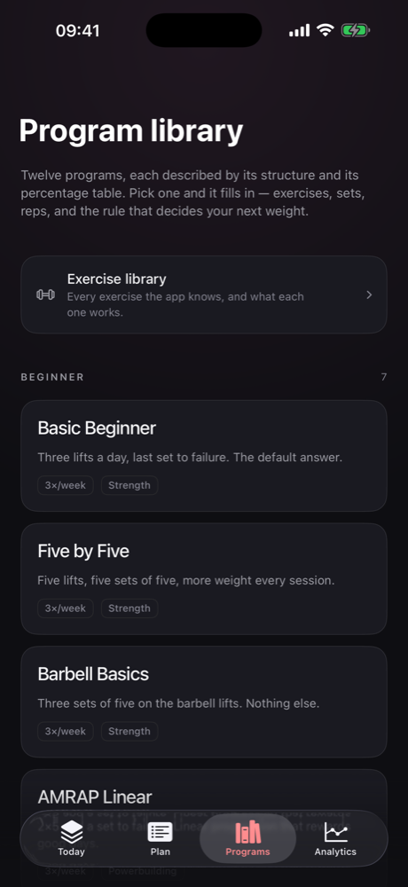
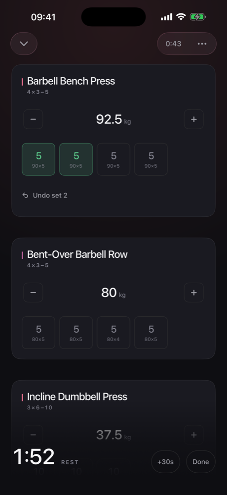
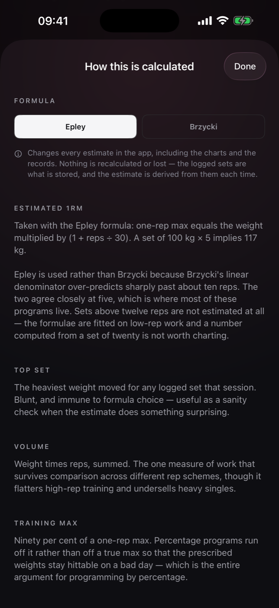
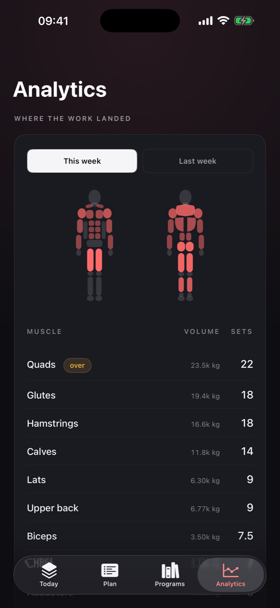
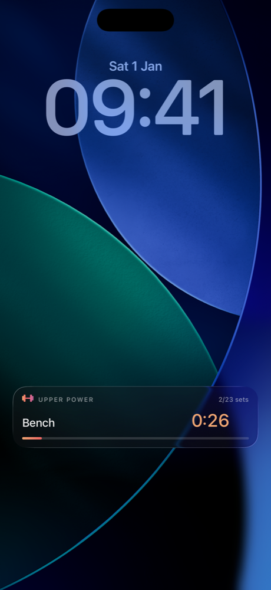
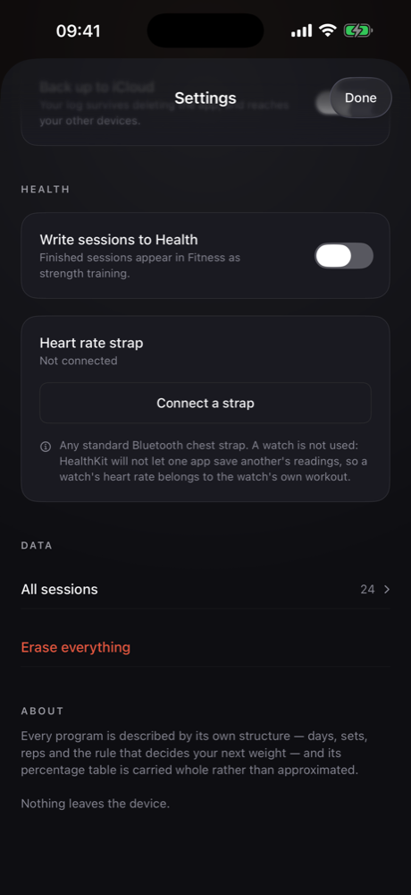

The programs
Twelve programs, carried whole
Linear progressions, upper/lower and push/pull/legs splits, and percentage-driven waves. Each one carries its own percentage table rather than an approximation of it.
Where a structure could not be represented faithfully, it was left out instead of guessed at.

Logging
A set is one tap
Every weight is already there, rounded to plates you actually own. Add RPE if you want it, or leave it off.
A rest timer runs on the Lock Screen and in the Dynamic Island, so the phone can go back in your pocket between sets.

Nothing hidden
Every rule, shown
The app never asks you to trust a number. Each figure comes with the formula behind it and the reason that formula was chosen over the alternative.
When a lift stalls, it tells you the weight held and why. It does not console you.

The numbers
Volume per muscle, weekly
Hard sets and tonnage for every muscle, with the anatomy map lit by both. Intensity distribution, so you can see whether your heavy days are actually heavy.
Push to pull and quad to hamstring balance. Estimated one-rep max per lift, Epley or Brzycki.

Between sets
The timer runs on the Lock Screen
Start a set and the rest clock carries on without the app open, as a Live Activity on the Lock Screen and in the Dynamic Island.
It keeps counting past zero, because how far over you are is the number that decides whether the next set is still the set you planned.

Underneath
Six ways to decide the next weight
Every program runs one of six progression schemes, and the app always shows which. Percentage programs run off a training max rather than a true max, so the prescribed weights stay hittable on a bad day.
| Scheme | How the next weight is decided |
|---|---|
| Linear | A fixed increment every session, until a miss. |
| Linear with AMRAP | As above, but the last set is taken as far as it will go, and a big set earns a double jump. |
| Double progression | Reps climb inside a range first; weight only moves once the top of the range is met on every set. |
| Three-week waves | Percentages of a training max across three weeks, then the max itself moves. |
| High-volume waves | The same idea with more sets per week, for programs built around accumulated work. |
| Tiered | A heavy tier, a volume tier and an accessory tier, each progressing on its own terms. |
Where your training lives
No account. No analytics. The whole thing is one file on your phone.
No sign-up, no crash reporting, no third-party SDKs, no advertising. iCloud backup and Health export are both optional and both off until you turn them on.

Built for one thing
Barbell strength. No cardio scoring, no recovery index, no readiness number, no streaks to keep.